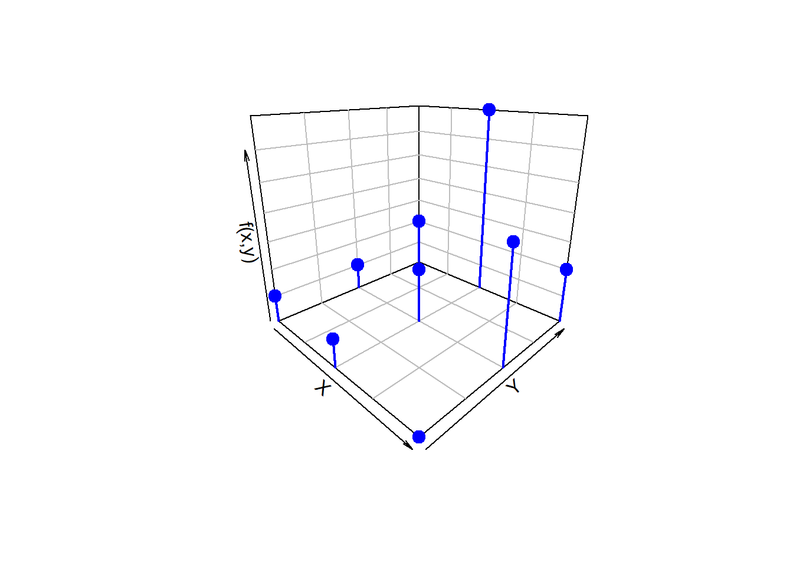
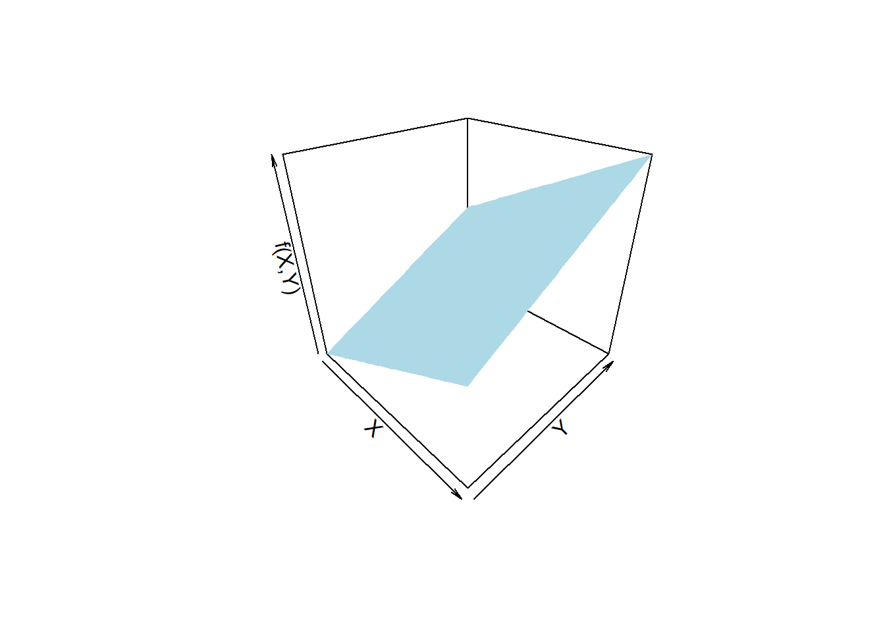

Variables conjuntas
Métodos y Simulación Estadística
Cuando se analizan dos variables simultáneamente, se forma una variable aleatoria bivariada \((X, Y)\), definida sobre un plano. La probabilidad conjunta de \((X, Y)\) describe la probabilidad de que ambas variables tomen valores específicos simultáneamente. Esta probabilidad genera una superficie tridimensional, como se ilustra en la Figura 2.15 que corresponde a una normal bivariada.
 Figura 2.15 Distribución normal bivariada.
Figura 2.15 Distribución normal bivariada.
Introducción
En muchos experimentos, los resultados son influenciados por múltiples variables. Ejemplos comunes incluyen:
- Precio de un producto y su volumen de ventas.
- Tiempo de preparación para un examen y la calificación obtenida.
- Cantidad de arena y cemento en una mezcla de concreto.
- Cantidad de abono aplicado y la producción de una planta.
En estos casos, es necesario emplear una función de densidad que describa la probabilidad conjunta de ambas variables. Esta función caracteriza cómo se comportan simultáneamente las variables involucradas.
La distribución de probabilidad conjunta es la función que describe la probabilidad de ocurrencia simultánea de dos (o más) variables aleatorias. Esta distribución considera la relación y dependencia entre las variables y se puede clasificar según la naturaleza de estas:
- Continua-continua: Ambas variables son continuas.
- Discreta-discreta: Ambas variables son discretas.
- Continua-discreta: Una variable es continua y la otra es discreta.
Esta guía se centra en los casos más representativos:
- Discreta-discreta: Ejemplificado mediante tablas de probabilidad conjunta y distribuciones marginales.
- Continua-continua: Ilustrado mediante funciones de densidad conjunta y gráficos de superficies.
Discreto-discreto
Función de distribución de probabilidad conjunta
Cuando \(X\) y \(Y\) son variables aleatorias discretas, la función de probabilidad conjunta se define como: \[ f_{X,Y}(x,y) = P(X = x, Y = y) \] Esta función representa la probabilidad de que \(X\) tome el valor \(x\) y \(Y\) tome el valor \(y\) simultáneamente.
Propiedades de la distribución conjunta:
Para ser válida, la distribución conjunta debe cumplir con las siguientes características:
Totalidad de la probabilidad: La suma de todas las probabilidades conjuntas es igual a 1: \[ \sum_{x=x_{(1)}}^{x_{(n)}} \sum_{y=y_{(1)}}^{y_{(n)}} f_{X,Y}(x,y) = 1 \] Esto asegura que la probabilidad total cubre todos los resultados posibles.
No negatividad: Todas las probabilidades deben ser no negativas: \[ f_{X,Y}(x,y) \geq 0 \quad \text{para todo } x,y \] Esta propiedad garantiza que ninguna probabilidad sea negativa.
Esta función describe la probabilidad de ocurrencia simultánea de dos eventos discretos. Se suele representar mediante una tabla de probabilidad conjunta, donde las filas corresponden a valores de \(X\) y las columnas a valores de \(Y\).
Ejemplo:
Se consideran:
- \(X\): Número de fallas de una máquina por día, con \(R_X = \{1,2,3\}\).
- \(Y\): Número de veces que el operario llama al técnico, con \(R_Y = \{1,2,3\}\).
La función de probabilidad conjunta \(f_{X,Y}(x,y)\) está dada en la Tabla 2.7.
| \(x\) | ||||
|---|---|---|---|---|
| \(f_{X,Y}(x,y)\) | 1 | 2 | 3 | |
| \(y\) | 1 | 0.05 | 0.05 | 0.10 |
| 2 | 0.05 | 0.10 | 0.35 | |
| 3 | 0 | 0.20 | 0.10 |
Verificación de la distribución conjunta:
Para tal efecto se revisa que la suma de todas las probabilidades es igual a 1:
fxy <- matrix(c(0.05, 0.05, 0.00,
0.05, 0.10, 0.20,
0.10, 0.35, 0.10),
ncol = 3, byrow = TRUE)
colnames(fxy) <- c("X=1", "X=2", "X=3")
rownames(fxy) <- c("Y=1", "Y=2", "Y=3")
print(fxy) X=1 X=2 X=3
Y=1 0.05 0.05 0.0
Y=2 0.05 0.10 0.2
Y=3 0.10 0.35 0.1suma_total <- sum(fxy)
print(paste("Suma total: ", suma_total)) # Debería ser 1[1] "Suma total: 1"La función se puede representar en un gráfico tridimensional como el de la Figura 2.16.
library(plot3D)
# Valores de fxy, X y Y proporcionados
fxy <- matrix(c(0.05, 0.05, 0.00,
0.05, 0.10, 0.20,
0.10, 0.35, 0.10),
ncol = 3, byrow = TRUE)
colnames(fxy) <- c("X=1", "X=2", "X=3")
rownames(fxy) <- c("Y=1", "Y=2", "Y=3")
x <- rep(1:3, each = 3)
y <- rep(1:3, times = 3)
fxy_vals <- as.vector(fxy)
# Gráfico 3D
scatter3D(x = x,
y = y,
z = fxy_vals,
colvar = NULL, col = "blue",
pch = 19, cex = 1.5,
phi = 20, theta = 45,
zlab = "f(x,y)", xlab = "X", ylab = "Y",
bty = "b2",
col.panel = "steelblue",
col.grid = "darkblue")
# Añadir líneas
for (i in 1:length(x)) {
lines3D(x = rep(x[i], 2),
y = rep(y[i], 2),
z = c(0, fxy_vals[i]),
col = "blue",
lwd = 2,
add = TRUE)
}
library(plot3D)
# Valores de fxy, X y Y proporcionados
fxy <- matrix(c(0.05, 0.05, 0.00,
0.05, 0.10, 0.20,
0.10, 0.35, 0.10),
ncol = 3, byrow = TRUE)
colnames(fxy) <- c("X=1", "X=2", "X=3")
rownames(fxy) <- c("Y=1", "Y=2", "Y=3")
x <- rep(1:3, each = 3)
y <- rep(1:3, times = 3)
fxy_vals <- as.vector(fxy)
# Gráfico 3D
scatter3D(x = x,
y = y,
z = fxy_vals,
colvar = NULL, col = "blue",
pch = 19, cex = 1.5,
phi = 20, theta = 45,
zlab = "f(x,y)", xlab = "X", ylab = "Y",
bty = "b2",
col.panel = "steelblue",
col.grid = "darkblue")
# Añadir líneas
for (i in 1:length(x)) {
lines3D(x = rep(x[i], 2),
y = rep(y[i], 2),
z = c(0, fxy_vals[i]),
col = "blue",
lwd = 2,
add = TRUE)
}
 Figura 2.16 Distribución conjunta discreta-discreta.
Figura 2.16 Distribución conjunta discreta-discreta.
Probabilidad marginal
A partir de la función de distribución conjunta de dos variables aleatorias, se pueden derivar las distribuciones marginales, que describen el comportamiento individual de cada variable, ignorando la otra. Estas distribuciones se denotan comúnmente como \(g(x)\) para \(X\) y \(h(y)\) para \(Y\). Si \(X\) y \(Y\) son variables aleatorias discretas, entonces:
Distribución marginal de \(X\) (probabilidad de \(X\)):
\[ g(x) = f_{X}(x) = \sum_{y=y_{(1)}}^{y_{(n)}} f_{X,Y}(x,y) \] Esta suma acumula todas las probabilidades conjuntas para cada valor fijo de \(X\).
Distribución marginal de \(Y\) (probabilidad de \(Y\)):
\[ h(y) = f_{Y}(y) = \sum_{x=x_{(1)}}^{x_{(n)}} f_{X,Y}(x,y) \] Esta suma acumula todas las probabilidades conjuntas para cada valor fijo de \(Y\).
Ejemplo:
Este ejemplo ilustra cómo obtener las funciones marginales \(g(x)\) y \(h(y)\) a partir de una tabla de distribución conjunta.
La función marginal de \(X\) se calcula sumando las probabilidades por columnas, lo que representa la acumulación de todas las probabilidades asociadas a \(Y\) para cada valor de \(X\).
# Crea la matriz fxy que contiene la distribución conjunta (3 filas x 3 columnas)
fxy <- matrix(c(0.05, 0.05, 0, # Primera fila: Y=1
0.05, 0.10, 0.20, # Segunda fila: Y=2
0.10, 0.35, 0.10),# Tercera fila: Y=3
ncol = 3, byrow = TRUE)
# Calcula la suma marginal por filas (suma sobre Y) para obtener g(x)
gx <- addmargins(fxy, 1)
# Asigna nombres a las filas, incluyendo la fila de sumas g(x)
rownames(gx) <- c("1", "2", "3", "g(x)")
# Tabla resultante gx
# print(gx)La siguiente salida computacional muestra los resultados obtenidos tras calcular la distribución marginal \(g(x)\) sumando las probabilidades por columnas:
[,1] [,2] [,3]
1 0.05 0.05 0.0
2 0.05 0.10 0.2
3 0.10 0.35 0.1
g(x) 0.20 0.50 0.3
La función marginal de \(Y\) se obtiene sumando las probabilidades por filas, es decir, acumulando todas las probabilidades de \(X\) para cada valor de \(Y\).
# Crea la matriz fxy de la distribución conjunta (3 filas x 3 columnas)
fxy <- matrix(c(0.05, 0.05, 0,
0.05, 0.10, 0.20,
0.10, 0.35, 0.10),
ncol = 3, byrow = TRUE)
# Calcula la suma marginal por columnas (suma sobre X) para obtener h(y)
hy <- addmargins(fxy, 2)
# Asigna nombres a las columnas, incluyendo la columna de sumas h(y)
colnames(hy) <- c("1", "2", "3", "h(y)")
# Mostra la tabla resultante hy
# print(hy)La siguiente salida computacional muestra los resultados obtenidos tras calcular la distribución marginal \(h(y)\) sumando las probabilidades por filas:
1 2 3 h(y)
[1,] 0.05 0.05 0.0 0.10
[2,] 0.05 0.10 0.2 0.35
[3,] 0.10 0.35 0.1 0.55
Función de distribución conjunta acumulada
Si \(X\) y \(Y\) son variables aleatorias discretas, su función de distribución conjunta acumulada \(F_{X,Y}(x,y)\) se expresa como:
\[ F_{X,Y}(x,y) = \sum_{t_x = -\infty}^{x} \sum_{t_y = -\infty}^{y} f_{X,Y}t_x,t_y) \]Propiedades de la función de distribución conjunta acumulada \(F_{X,Y}(x,y)\)
1. Límites:
- En los extremos negativos, la probabilidad acumulada es cero: \[ F_{X,Y}(-\infty, -\infty) = 0 \]
- En los extremos positivos, la probabilidad acumulada es uno: \[ F_{X,Y}(+\infty, +\infty) = 1 \]
2. Monotonía:
- \(F_{X,Y}(x,y)\) es
monótonamente no decreciente, lo que significa que:
- Si \(x_1 \leq x_2\), entonces \(F_{X,Y}(x_1,y) \leq F_{X,Y}(x_2,y)\).
- Si \(y_1 \leq y_2\), entonces \(F_{X,Y}(x,y_1) \leq F_{X,Y}(x,y_2)\).
3. Relaciones marginales:
- La distribución marginal de \(X\) se obtiene haciendo tender \(y\) a infinito: \[ F_X(x) = \lim_{y \to +\infty} F_{X,Y}(x,y) \]
- La distribución marginal de \(Y\) se obtiene haciendo tender \(x\) a infinito: \[ F_Y(y) = \lim_{x \to +\infty} F_{X,Y}(x,y) \]
Estas propiedades son esenciales garantizar la coherencia de la función de distribución acumulada.
Ejemplo:
Este ejemplo ilustra cómo se calcula la función de distribución acumulada conjunta (FDA conjunta), sumando las probabilidades de la distribución conjunta hasta la posición \((2,2)\).
La FDA conjunta se obtiene mediante la suma acumulada de las probabilidades sobre filas y columnas hasta los valores observados:
\[ \begin{equation} \begin{array}{rl} F(2,2) = & \sum_{x=1}^{2} \sum_{y=1}^{2} f_{X,Y}(x,y) \\ = & f(1,1) + f(1,2) + f(2,1) + f(2,2) \\ = & 0.05 + 0.05 + 0.05 + 0.10 \\ = & 0.25 \end{array} \end{equation} \]
Función de densidad condicional
La función de densidad condicional describe cómo se distribuye la probabilidad de \(X\) cuando se conoce que \(Y\) ha tomado un valor específico \(y_0\).
\[\begin{equation*} f_{_{X|Y}}(x|y_{0})=\left\lbrace \begin{array}{ccl} \dfrac{f_{_{X,Y}}(x,y_0)}{h(y_0)}&;& h(y_0) > 0\\ &&\\ 0 &;&\mbox{en otro caso} \end{array} \right. \end{equation*}\]
\(f_{X|Y}(x|y_0)\) es la probabilidad de que \(X\) tome el valor \(x\) dado que \(Y = y_0\). El denominador \(h(y_0)\) es la distribución marginal de \(Y\), que actúa como un factor de normalización. Si \(h(y_0) = 0\), la probabilidad condicional no está definida. Para una variable discreta se cumple que \[\sum_{x} f_{X|Y}(x|y_0) = 1\].
La función de densidad condicional
describe cómo se distribuye la probabilidad de \(Y\) al conocer que \(X\) ha tomado un valor específico \(x_0\).
\[\begin{equation*} f_{Y|X}(y|x_{0})=\left\lbrace \begin{array}{ccl} \dfrac{f_{_{X,Y}}(x_0,y)}{g(x_0)}\:&;&\:g(x_0)>0\\ &&\\ 0\:&;&\:\mbox{en otro caso} \end{array} \right. \end{equation*}\]
\(f_{Y|X}(y|x_0)\) es la probabilidad condicional de que \(Y\) tome el valor \(y\) dado que \(X = x_0\). El denominador \(g(x_0)\) es la distribución marginal de \(X\), que normaliza la distribución. Si \(g(x_0) = 0\), la probabilidad condicional no está definida. Adicional, para una variable discreta: \[\sum_{y} f_{Y|X}(y|x_0) = 1\]
Ejemplo:
En este ejemplo, se muestra el proceso para obtener la función de densidad condicional de \(X\) dado que \(Y=2\).
La tabla muestra los valores de la distribución conjunta para distintos valores de \(X\) y un valor fijo de \(Y\).
| \(y\) | \(f(x,y)\) | \(x=1\) | \(x=2\) | \(x=3\) | \(h(y)\) |
|---|---|---|---|---|---|
| 2 | 0.050 | 0.10 | 0.35 | 0.50 |
\(h(y=2)\) es la distribución marginal de \(Y\) en \(y=2\), obtenida como: \[h(y=2) = 0.050 + 0.10 + 0.35 = 0.50\]
Para determinar la función condicional \(f(x|y=2)\) se usa la definición: \[f(x|y=2) = \frac{f_{X,Y}(x,y=2)}{h(y=2)}\] La tabla siguiente muestra los resultados de \(f(x|y=2)\) para distintos valores de \(X\):
| \(x\) | \(f(x|y=2)\) | Cálculo | Resultado |
|---|---|---|---|
| 1 | \(\frac{f(1,2)}{0.50}\) | \(\frac{0.05}{0.50}\) | 0.10 |
| 2 | \(\frac{f(2,2)}{0.50}\) | \(\frac{0.10}{0.50}\) | 0.20 |
| 3 | \(\frac{f(3,2)}{0.50}\) | \(\frac{0.35}{0.50}\) | 0.70 |
Continuo-continuo
Función de densidad conjunta
Cuando \(X\) y \(Y\) son variables aleatorias continuas, su función de densidad conjunta \(f_{X,Y}(x,y)\) permite determinar la probabilidad de que estas variables tomen valores dentro de una región específica \(R\).
La probabilidad de que \((X, Y)\) se encuentren dentro de la región \(R\) está dada por: \[ P((X,Y) \in R) = \int\int_{R} f_{X,Y}(x,y) \,dx\,dy \] Esta integral representa el volumen bajo la superficie \(f_{X,Y}(x,y)\) sobre la región \(R\).
Propiedades de la función de densidad conjunta \(f_{X,Y}(x,y)\)
Para que \(f_{X,Y}(x,y)\) sea válida como densidad de probabilidad, debe cumplir:
No negatividad: La densidad siempre es positiva o nula: \[f(x,y) \geq 0, \quad \forall (x,y)\]
Totalidad: La integral doble sobre todo el espacio es 1: \[ \int_{-\infty}^{\infty} \int_{-\infty}^{\infty} f_{X,Y}(x,y) \,dx\,dy = 1 \] Es importante tener en cuenta que \(f_{X,Y}(x,y)\) no es una probabilidad, sino una densidad; la probabilidad se obtiene integrando. El área bajo la superficie en cualquier región específica es la probabilidad de que \((X, Y)\) esté en esa región. La integral total bajo toda la superficie es 1, garantizando que cubre todo el espacio de posibilidades.
Ejemplo:
Se modelan la proporción de ácido \(X\) y de ácido \(Y\) (en litros) en una mezcla mediante la función de densidad conjunta \(f_{X,Y}(x,y)\) definida como:
\[ f_{X,Y}(x,y) = \left\{ \begin{matrix} (x+y) & \text{si } 0 \leq x \leq 1 \text{ y } 0 \leq y \leq 1 \\\\ 0 & \text{en otro caso} \end{matrix} \right. \]
Para verificar que \(f_{X,Y}(x,y)\) es una función de densidad válida, la integral doble sobre la región definida debe ser igual a 1:
\[ \int_{0}^{1} \int_{0}^{1} (x+y) \,dx\,dy \]
Integración respecto a \(x\):
\[ \int_{0}^{1} (x+y) \,dx = \left( \frac{x^2}{2} + yx \right) \Bigg|_{0}^{1} = \frac{1}{2} + y \]
Integración respecto a \(y\):
\[ \int_{0}^{1} \left( \frac{1}{2} + y \right) \,dy = \left( \frac{1}{2}y + \frac{y^2}{2} \right) \Bigg|_{0}^{1} = \frac{1}{2} + \frac{1}{2} = 1 \] El valor de la integral doble es 1, confirmando que \(f_{X,Y}(x,y)\) es una función de densidad conjunta válida.
Se utiliza puede usar la librería cubature para integrar
numéricamente la función conjunta \(f_{X,Y}(x,y) = x + y\) en el intervalo
\([0,1] \times [0,1]\).
# Cargar la librería 'cubature' para realizar la integración numérica
library(cubature)
# Define la función conjunta f(x,y) = x + y
fxy <- function(x) {
return(x[1] + x[2]) # x[1] = x, x[2] = y
}
# Realiza la integración numérica en el intervalo [0,1] para x y y
Ifxy <- adaptIntegrate(
fxy,
lowerLimit = c(0, 0), # Límites inferiores para x e y
upperLimit = c(1, 1) # Límites superiores para x e y
)
# Muestra el valor de la integral calculada
# Ifxy$integralLa función conjunta \(f_{X,Y}(x,y) = x + y\) se puede graficar como se muestra a continuación en la Figura 2.17.
library(plot3D)
# Definir la función conjunta
density_function <- function(x, y) {
ifelse(x >= 0 & x <= 1 & y >= 0 & y <= 1, x + y, 0)
}
# Crear una cuadrícula de valores
gx <- seq(0, 1, length.out = 30)
gy <- seq(0, 1, length.out = 30)
g <- expand.grid(x = gx, y = gy)
g$z <- mapply(density_function, g$x, g$y)
# Crear el gráfico 3D
persp3D(
x = gx,
y = gy,
z = matrix(g$z, nrow = 30),
col = "lightblue",
theta = 45,
phi = 30,
xlab = "X",
ylab = "Y",
zlab = "f(X,Y)",
main = ""
)
library(plot3D)
# Definir la función conjunta
density_function <- function(x, y) {
ifelse(x >= 0 & x <= 1 & y >= 0 & y <= 1, x + y, 0)
}
# Crear una cuadrícula de valores
gx <- seq(0, 1, length.out = 30)
gy <- seq(0, 1, length.out = 30)
g <- expand.grid(x = gx, y = gy)
g$z <- mapply(density_function, g$x, g$y)
# Crear el gráfico 3D
persp3D(
x = gx,
y = gy,
z = matrix(g$z, nrow = 30),
col = "lightblue",
theta = 45,
phi = 30,
xlab = "X",
ylab = "Y",
zlab = "f(X,Y)",
main = ""
)
 Figura 2.17 Distribución conjunta \(f_{X,Y}(x,y) = x + y\) para \(0 \leq x \leq 1\) y \(0 \leq y \leq 1\)
Figura 2.17 Distribución conjunta \(f_{X,Y}(x,y) = x + y\) para \(0 \leq x \leq 1\) y \(0 \leq y \leq 1\)
Función de densidad marginal
Cuando \(X\) y \(Y\) son variables aleatorias continuas, las distribuciones marginales se obtienen integrando la función de densidad conjunta.
Función de densidad marginal de \(X\):
\[ g(x) = f_{X}(x) = \int_{-\infty}^{\infty} f_{X,Y}(x,y) \,dy \] Esta integral acumula la probabilidad para todos los posibles valores de \(Y\), obteniendo así la distribución de \(X\) por sí sola.
Función de densidad marginal de \(Y\):
\[ h(y) = f_{Y}(y) = \int_{-\infty}^{\infty} f_{X,Y}(x,y) \,dx \] Esta integral acumula la probabilidad para todos los posibles valores de \(X\), obteniendo así la distribución de \(Y\) por sí sola.
Ejemplo:
La función de densidad marginal de \(X\) (\(g(x)\)) se obtiene integrando la función de densidad conjunta respecto a \(y\):
\[g(x) = \displaystyle\int_{0}^{1} (x + y) \:dy = \bigg( xy + \dfrac{y^{2}}{2} \bigg) \Bigg|_{0}^{1} = \bigg(x + \dfrac{1}{2}\bigg)\] La expresión de la densidad marginal:\[ g(x) = \left\{ \begin{matrix} \\ x + \frac{1}{2} & \text{si } 0 \leq x \leq 1 \\ 0 & \text{en otro caso} \end{matrix} \right. \] La función de densidad marginal de \(Y\) (\(h(y)\)) se obtiene integrando la función de densidad conjunta respecto a \(x\): \[ h(y) = \int_{0}^{1} (x + y) \,dx = \left( \frac{x^2}{2} + yx \right) \Bigg|_{0}^{1} = \left( \frac{1}{2} + y \right) \] La expresión de la densidad marginal: \[ h(y) = \left\{ \begin{matrix} \\ y + \frac{1}{2} & \text{si } 0 \leq y \leq 1 \\ 0 & \text{en otro caso} \end{matrix} \right. \]
Función de densidad de probabilidad conjunta acumulada
Para variables aleatorias continuas, la función de distribución conjunta se expresa como: \[ F_{X,Y}(x,y) = P(X \leq x, Y \leq y) = \int_{-\infty}^{x} \int_{-\infty}^{y} f_{X,Y}(s,t) \,ds\,dt \]
Propiedades de la función de distribución conjunta
- Monotonía: \(F_{X,Y}(x,y)\) es una función no decreciente.
- Límites en extremos:
- \(F_{X,Y}(x,-\infty) = 0\)
- \(F_{X,Y}(-\infty,y) = 0\)
- \(F_{X,Y}(-\infty,-\infty) = 0\)
- Límite máximo: \(F_{X,Y}(+\infty,+\infty) = 1\)
- Relaciones marginales:
- \(F_{X,Y}(+\infty,y) = F_Y(y)\)
- \(F_{X,Y}(x,+\infty) = F_X(x)\)
La probabilidad de que \((X,Y)\) esté en una región rectangular es: \[ P(x_1 < X \leq x_2, y_1 < Y \leq y_2) = F_{X,Y}(x_2,y_2) - F_{X,Y}(x_1,y_2) - F_{X,Y}(x_2,y_1) + F_{X,Y}(x_1,y_1) \]
Función de densidad condicionales
La función de densidad condicional de \(X\) dado que \(Y=y_0\) está dada por:
\[\begin{equation*} f_{_{X|Y}}(x|y_{0})=\left\lbrace \begin{array}{ccl} \dfrac{f_{_{X,Y}}(x,y_0)}{h(y_0)}&;& h(y_0) > 0\\ &&\\ 0 &;&\mbox{en otro caso} \end{array} \right. \end{equation*}\]
La función de densidad condicional de \(Y\) dado que \(X=x_0\) está dada por:
\[\begin{equation*} f_{Y|X}(y|x_{0})=\left\lbrace \begin{array}{ccl} \dfrac{f_{_{X,Y}}(x_0,y)}{g(x_0)}\:&;&\:g(x_0)>0\\ &&\\ 0\:&;&\:\mbox{en otro caso} \end{array} \right. \end{equation*}\]
Covarianza y correlación
La covarianza mide la relación lineal entre dos variables aleatorias \(X\) y \(Y\) y se expresa mediante la esperanza matemática.
Definición general
\[ \text{COV}[X,Y] = E[(X - E[X])(Y - E[Y])] \] Esta expresión mide cómo varían conjuntamente \(X\) y \(Y\) alrededor de sus medias. Otra forma equivalente de expresar la covarianza es: \[ \text{COV}[X,Y] = E[XY] - E[X]E[Y] \]Cálculo de la Esperanza \(E[XY]\)
Caso discreto-discreto: Para variables discretas \(X\) y \(Y\), la esperanza conjunta se obtiene mediante la suma doble: \[ E[XY] = \sum_{x \in R_X} \sum_{y \in R_Y} xyf_{_{X,Y}}(x,y) \]
Caso continuo-continuo: Para variables continuas \(X\) y \(Y\), la esperanza conjunta se obtiene mediante la integral doble: \[ E[XY] = \int_{-\infty}^{\infty} \int_{-\infty}^{\infty} xyf_{_{X,Y}}(x,y) \,dx\,dy \]
Interpretación:
- \(\text{COV}[X,Y] > 0\): \(X\) e \(Y\) tienden a aumentar linealmente juntas (relación positiva).
- \(\text{COV}[X,Y] < 0\): Cuando \(X\) aumenta, \(Y\) tiende a disminuir linealmente (relación negativa).
- \(\text{COV}[X,Y] = 0\): No hay relación lineal entre \(X\) y \(Y\).
Correlación entre las variables X,Y
El coeficiente de correlación de Pearson (\(\rho\)) mide la fuerza y dirección de la asociación lineal entre dos variables aleatorias \(X\) y \(Y\).
Definición general
\[ \rho = \frac{\text{COV}[X,Y]}{\sqrt{\text{Var}(X) \cdot \text{Var}(Y)}} \]
Interpretación:
- El coeficiente varía en el rango: \[-1 \leq \rho \leq 1\]
- \(\rho = 1\): Relación lineal positiva perfecta.
- \(\rho = -1\): Relación lineal negativa perfecta.
- \(\rho = 0\): No existe relación lineal (puede haber relación no lineal).
- Valores intermedios: Indican la fuerza de la relación lineal.
| Rango de \(\rho\) | Grado de asociación lineal |
|---|---|
| \(-1.00 \leq \rho < -0.90\) | Negativa muy fuerte |
| \(-0.90 \leq \rho < -0.75\) | Negativa considerable |
| \(-0.75 \leq \rho < -0.50\) | Negativa media |
| \(-0.50 \leq \rho < -0.25\) | Negativa débil |
| \(-0.25 \leq \rho < -0.10\) | Negativa muy débil |
| \(-0.10 \leq \rho < 0.10\) | No existe correlación |
| \(0.10 \leq \rho < 0.25\) | Positiva muy débil |
| \(0.25 \leq \rho < 0.50\) | Positiva débil |
| \(0.50 \leq \rho < 0.75\) | Positiva media |
| \(0.75 \leq \rho < 0.90\) | Positiva considerable |
| \(0.90 \leq \rho \leq 1.00\) | Positiva muy fuerte |
Propiedades:
- Simetría: \(\rho(X,Y) = \rho(Y,X)\).
- Invarianza ante traslaciones: La correlación es independiente de cambios en la escala o desplazamientos.
- Normalización: Está acotado entre -1 y 1.
Los gráficos de la Figura 2. 18 muestran la relación entre dos variables para diferentes valores del coeficiente de correlación de Pearson (\(\rho\)), destacando cómo varía la asociación lineal negativa:
- (a) \(\rho = -1.0\) (Negativa perfecta): Relación lineal negativa exacta; todos los puntos se alinean sobre una recta descendente.
- (b) \(\rho = -0.90\) (Negativa muy fuerte): Relación negativa lineal casi perfecta, con una ligera dispersión alrededor de una línea descendente.
- (c) \(\rho = -0.75\) (Negativa considerable): Patrón descendente lineal claro, aunque con más dispersión que en \(\rho = -0.90\).
- (d) \(\rho = -0.50\) (Negativa media): Relación lineal negativa moderada, con una nube de puntos más dispersa pero con tendencia descendente.
- (e) \(\rho = -0.25\) (Negativa débil): Relación lineal negativa leve; la tendencia descendente es poco perceptible.
- (f) \(\rho = 0.0\) (Sin correlación): No se observa un patrón lineal; la distribución de puntos es aleatoria.
A medida que \(\rho\) se acerca a -1, la relación negativa lineal es más fuerte y los puntos están más alineados. Cuando \(\rho\) se aproxima a 0, la relación lineal desaparece, y la dispersión es aleatoria.
 Figura 2. 18 Correlaciones negativas (a) \(\rho = -1.0\). \(\hspace{.5cm}\) (b) \(\rho = -0.90\).
Figura 2. 18 Correlaciones negativas (a) \(\rho = -1.0\). \(\hspace{.5cm}\) (b) \(\rho = -0.90\). (c) \(\rho = -0.75\). \(\hspace{.5cm}\)(d) \(\rho = -0.50\). \(\hspace{.5cm}\) (e) \(\rho = -0.25\). \(\hspace{.5cm}\) (f) \(\rho = 0.0\).
Los gráficos de la Figura 2. 19 muestran
la relación entre dos variables para diferentes valores del coeficiente
de correlación de Pearson (\(\rho\)),
destacando cómo varía la asociación lineal positiva.
- (a) \(\rho = 0.10\) (Positiva muy débil): Relación positiva lineal apenas perceptible; los puntos están dispersos.
- (b) \(\rho = 0.25\) (Positiva débil): Tendencia ligeramente lineal ascendente, pero con considerable dispersión.
- (c) \(\rho = 0.50\) (Positiva media): Relación positiva lineal más clara; los puntos tienden a alinearse en una dirección ascendente.
- (d) \(\rho = 0.75\) (Positiva considerable): Tendencia ascendente lineal marcada; los puntos están más próximos a una línea.
- (e) \(\rho = 0.90\) (Positiva muy fuerte): Relación casi lineal; los puntos forman una franja muy estrecha en dirección ascendente.
- (f) \(\rho = 1.0\) (Positiva perfecta): Relación lineal perfecta; todos los puntos están alineados sobre una recta ascendente.
A medida que \(\rho\) se acerca a 1, la relación positiva lineal es más fuerte y los puntos están más alineados. Cuando \(\rho\) es bajo, la tendencia lineal positiva es leve, y la dispersión es mayor.
 Figura 2. 19 Correlaciones positivas (a) \(\rho = 0.10\).\(\hspace{.5cm}\) (b) \(\rho = 0.25\).
Figura 2. 19 Correlaciones positivas (a) \(\rho = 0.10\).\(\hspace{.5cm}\) (b) \(\rho = 0.25\). (c) \(\rho = 0.50\).\(\hspace{.5cm}\) (d) \(\rho = 0.75\). \(\hspace{.5cm}\) (e) \(\rho = 0.90\). \(\hspace{.5cm}\) (f) \(\rho = 1.0\).
Independencia
Sea \(X\) y \(Y\) dos variables aleatorias, ya sean discretas o continuas, con:
- Función de probabilidad conjunta: \(f_{X,Y}(x,y)\)
- Funciones de probabilidad marginal: \(g(x)\) para \(X\) y \(h(y)\) para \(Y\)
Definición de independencia
Se dice que las variables \(X\) y \(Y\) son estadísticamente independientes si y solo si para todo \(x\) y \(y\): \[ f_{X,Y}(x,y) = g(x) \cdot h(y) \] Esto significa que la probabilidad conjunta es igual al producto de las probabilidades marginales, indicando que el comportamiento de una variable no afecta al de la otra.
Interpretación
- Si las variables son independientes, conocer el valor de \(X\) no proporciona información sobre el valor de \(Y\), y viceversa.
- Esta propiedad se cumple para todas las regiones del espacio muestral.
Propiedades clave:
- Relación con la esperanza: \(E[XY] = E[X]E[Y]\) si \(X\) y \(Y\) son independientes.
- Relación con la covarianza: \(\text{COV}(X,Y) = 0\) en caso de independencia (aunque la covarianza nula no siempre implica independencia).
Ejemplo:
Definición de las funciones:
- Función conjunta:
\[ f_{X,Y}(x,y) = \left\{ \begin{matrix} (x+y) & \text{si } 0 \leq x \leq 1 \text{ y } 0 \leq y \leq 1 \\ 0 & \text{en otro caso} \end{matrix} \right. \]
- Función marginal de \(X\):
\[ g(x) = \left\{ \begin{matrix} x + \frac{1}{2} & \text{si } 0 \leq x \leq 1 \\ 0 & \text{en otro caso} \end{matrix} \right. \]
- Función marginal de \(Y\):
\[h(y) = \left\{ \begin{matrix} y + \frac{1}{2} & \text{si } 0 \leq y \leq 1 \\ 0 & \text{en otro caso} \end{matrix} \right. \]
Verificación de independencia:
Para que \(X\) y \(Y\) sean independientes, se debe cumplir: \[ f_{X,Y}(x,y) = g(x) \cdot h(y) \] Calculando el producto de las marginales:
\[ (x + \frac{1}{2})(\frac{1}{2} + y) = xy + \frac{x}{2} + \frac{y}{2} + \frac{1}{4} \] Comparando con la función conjunta: \[ (x + y) \neq xy + \frac{x}{2} + \frac{y}{2} + \frac{1}{4} \]
Conclusión:
- Dado que \[f_{X,Y}(x,y) \neq g(x) \cdot h(y),\] las variables \(X\) y \(Y\) no son independientes.
- Esto demuestra que el comportamiento conjunto no se descompone en el producto de sus distribuciones marginales, evidenciando dependencia estadística.